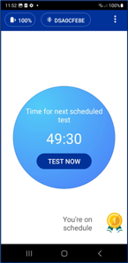
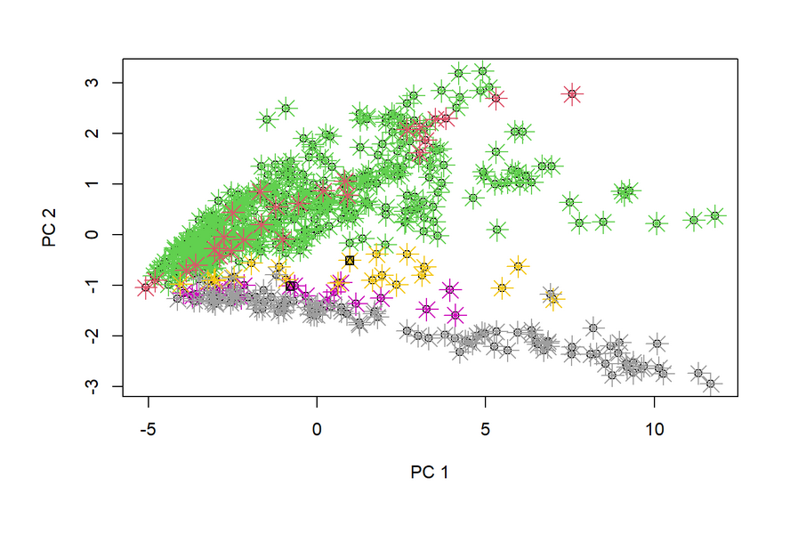
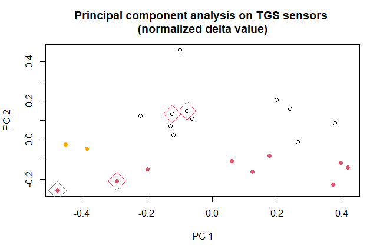
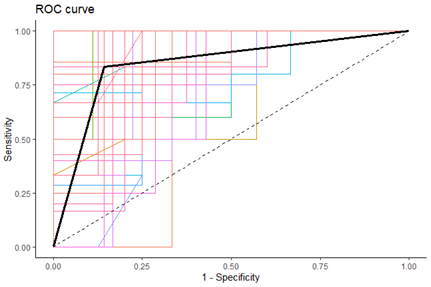
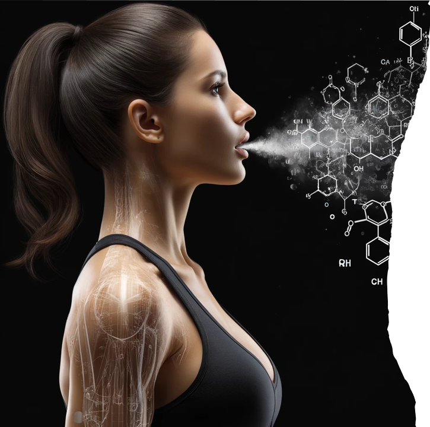

Validated breath capture
Robust handheld device, simple user workflow, automatic UV cleaning, and quality-control infrastructure for repeatable sampling.
Mobile breath-analysis technology
Digital Sensing Technologies develops BreathPassTM, a handheld e-Nose platform that captures VOC-patterns in exhaled breath and translates them into research, diagnostic, and operational insight.
Drag to rotate
The platform
BreathPassTM was originally developed by Deep Sensing Algorithms Ltd in Finland for rapid COVID-19 detection. After the acquisition of DSA in 2024, NewLife Wearables turned the solution into a true platform application and applied focus on new directions: epilepsy seizure prediction, forensic applications, and custom research.

Robust handheld device, simple user workflow, automatic UV cleaning, and quality-control infrastructure for repeatable sampling.
Cloud-connected analysis and study infrastructure, with the option to run selected analysis on-device where the workflow requires it.
AI-supported classification models developed for specific physiological and operational questions, not generic sensor sales.
Application focus
DST is broad by design and separates current advanced applications and a custom research platform.
NewLife Wearables
Research is focused on supporting epilepsy diagnosis and identification of VOC patterns that can indicate increased likelihood of seizure.
DST Forensic Solutions
The forensic program investigates whether physiological VOC-response patterns can support rapid pre-screening for drug smuggling and carrying of illegal substances in operational environments.
Selected partners
DST can support selected partners that want to test, validate, license, or co-develop breath-analysis applications on the BreathPass platform.
Evidence and development
DST combines prior BreathPassTM deployment experience with new application-specific studies in epilepsy and forensic screening. Current results support further validation and stepwise regulatory development.
COVID history
BreathPassTM was developed for diagnosis of COVID-19 infection. Clinical trials in Hong Kong in 2021 reached 99.9% accuracy for COVID recognition, supporting proof of concept for the technology and AI-based algorithm development.
Epilepsy pilot
A first pilot study with fewer than 20 patients in two clinics showed that breath profiles of participants with epilepsy could be distinguished from breath profiles of a control group.

Forensic pilot
In a customs-related pilot, breath profiles of positive cases could be separated from control profiles, with CT scan confirmation. A bootstrapping experiment reported average AUC of 0.95 across 500 iterations.


Current studies
Current and planned epilepsy work includes studies with Zwolle, SEIN, and Kempenhaeghe. The goal is to move from promising VOC-pattern evidence toward clinically robust endpoints, validated datasets, and a defined regulatory path.
Why breath?
Breath contains volatile organic compounds that reflect metabolic and physiological processes. Changes in these VOC patterns can provide a fast, repeatable, and patient-friendly route to research and future clinical insight.
For epilepsy, the scientific rationale is reinforced by work with trained dogs: studies have shown that dogs can detect odor signatures associated with epileptic seizures, and later work suggests that some seizure-related odor changes may occur before the event itself. DST is translating that biological signal into a mobile electronic sensing workflow.

Dog-detection studies support the hypothesis that seizure-related physiological changes can alter body odor. Breath analysis aims to measure related VOC-pattern changes with a scalable device rather than relying on trained animals.
BreathPassTM captures sensor responses from exhaled breath and uses analytical models to compare VOC-patterns across patients, controls, time windows, and clinical events.
Regulatory and IP status
Epilepsy diagnosis and seizure-prediction applications are currently research use only. They are not yet CE-marked diagnostic or prediction products.
BreathPassTM has prior regulated deployment experience in COVID-19 screening. DST is developing its current medical applications toward MDR-compliant clinical validation.
Patent pending protection has been filed around selected breath-analysis applications and platform elements, including sampling, VOC-pattern analysis, environmental compensation, and AI-supported classification workflows.
Clinical claims will be developed stepwise through study design, endpoint definition, validation datasets, and the applicable regulatory pathway.
Team
DST combines medical technology, data science, AI, engineering, finance, strategy, and scale-up experience.
Founder
Founder and Chairman of Oaklins and CEO of Physio Medical Systems, with experience as an entrepreneur, serial investor, M&A advisor, and strategist.
Chief Executive Officer
Medical technology entrepreneur with experience in data science, analytics, AI, strategy consulting, and clinical innovation. Holds a Master in Economics and a PhD in Medicine.
Chief Financial Officer
Finance and business administration leader with multiple CFO roles and a legal background, supporting governance, financing, and operational structure.
Chief Technology Officer
Former CTO of Deep Sensing Algorithms and R&D Director at Bioretec, with deep experience in engineering, materials science, biomaterials, and medical-device development.
Technical Director
Former Managing Director of Deep Sensing Algorithms, with experience across engineering, marketing and advertising, and technology strategy.
Collaborations
Company structure
Digital Sensing Technologies, DST and DST Forensic Solutions are trade names of NewLife Wearables BV. BreathPass is a trademark.
Advanced application area focused on epilepsy diagnosis support and seizure-prediction research.
Advanced application area focused on breath-based forensic screening and high-throughput operational workflows.
Selective platform leasing, licensing, and co-development for research and commercialization partners.
Contact
Use the form to create a direct email with the right context, or contact DST directly.
info@digitalsensing.tech